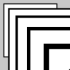
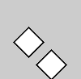
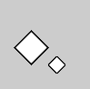

Translation, Rotation, Skalierung
Fragen
- Wenn es etwas mithilfe des Befehls
translate()verschiebe - was verschiebe ich dann?- Die nächste gezeichnete Form
- Alle gezeichneten Formen, die nach dem Befehl kommen
- Alle Formen innerhalb dieses draw-Durchlaufs
- Das Koordinatensystem innerhalb des gesamten draw-Durchlaufs
- Das Koordinatensystem ab der Stelle im Code, wo der Befehl aufgerufen wurde
- Wenn ich mithilfe des Befehls
rotate()etwas drehe - was wird dann gedreht?- Die nächsten Formen und zwar um ihren eigenen Mittelpunkt
- Das Koordinatensystem und zwar um seinen Mittelpunkt
- Wie wird der Winkel im Befehl
rotate()angegeben? - Wie lange sind die Befehle
- Wie lange sind die Befehle
translate(),rotate()undscale()gültig? - Wenn ich den Befehl
scale(10)ausführe, um welchen Faktor wird dann skaliert?- Formen sind danach 10mal so groß
- Formen sind danach 10% ihrer Originalgröße groß
- Formen sind danach 10 Pixel größer
Aufgaben
Transformationen kombinieren
Versuche, die folgenden Formen herzustellen, indem du die drei Transformationen translate, rotate und scale verwendest.
Zeichne die Formen am besten immer um den Nullpunkt herum und schalte entsprechende Transformation davor. Denke daran, dass du bei jeder Transformation das gesamte Koordinatensystem bewegst.
Versuche, jede Form zunächst "theoretisch" zu lösen (im Kopf oder auf Papier). Wenn du lediglich Code-Zeilen hin- und herschiebst oder kopierst, baust du evtl. kein wirkliches Verständnis auf...
|  |  |  |
Rotierendes Quadrat
Programmiere ein Quadrat, das sich im Uhrzeigersinn um seine Mitte dreht. Verwende rotate und translate (in welcher Reihenfolge?).
Rotation mit zwei Formen
Lass einen Kreis um ein Rechteck in der Mitte rotieren. Programmiere zwei Varianten. In der ersten bewegt sich das Rechteck nicht. In der zweiten dreht es sich mit dem Kreis mit.
Pulsierender Kreis
Programmiere einen Kreis mit Durchmesser 50, der pulsiert. Er vergrößert sich auf das Doppelte und verkleinert sich dann auf die Hälfte usw. Verwende scale und translate (in welcher Reihenfolge?).
Lass den Skalierungsfaktor nie negativ werden.
Schieben und Drehen
Lasse ein Quadrat von links nach rechts fliegen, das sich währenddessen um seinen Mittelpunkt dreht.